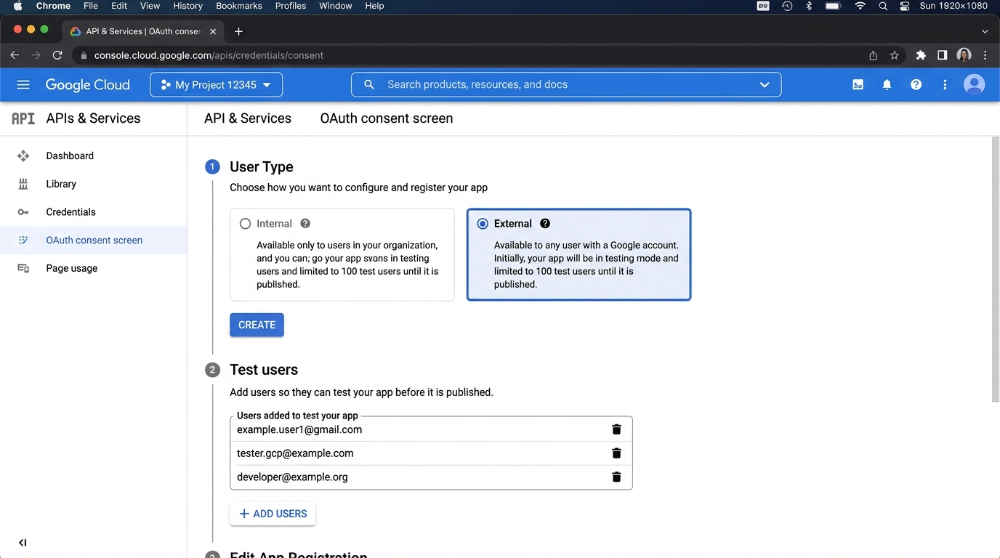
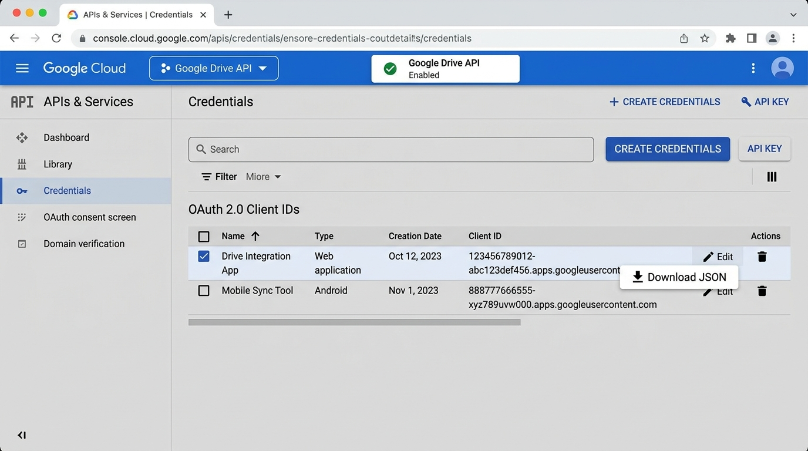
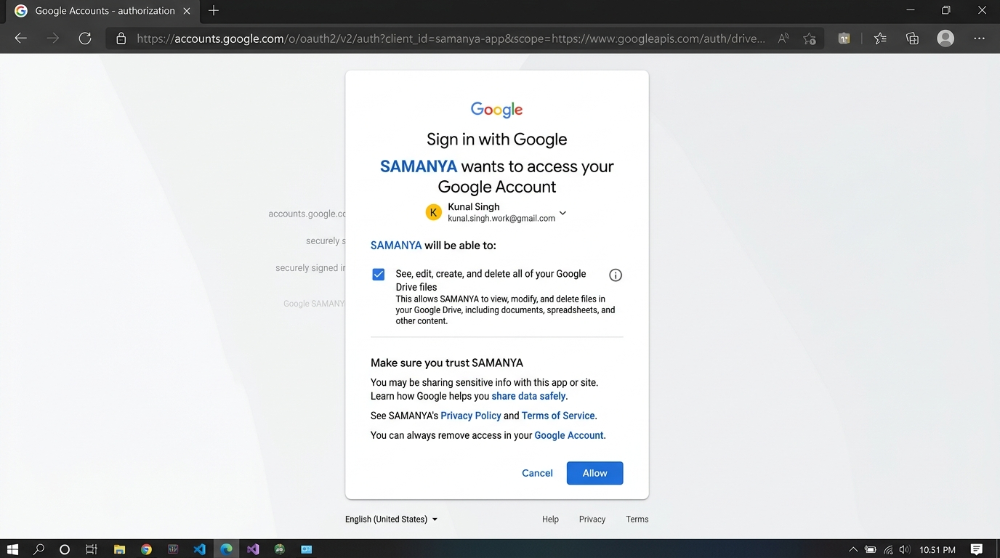

Guía de Integración Google Drive (1 TB)
Procedimiento técnico paso a paso para configurar la autenticación OAuth 2.0, autorizar el almacenamiento en la cuenta personal de Google Drive y sincronizar de forma bidireccional los archivos de residentes con Oracle Autonomous Database (SMY_ARCHIVOS).
Arquitectura del Sistema y Flujo de Transmisión
Cómo interactúan el cliente, la API intermedia, la base de datos Oracle y la nube de Google.
El sistema SAMANYA implementa un esquema de almacenamiento seguro donde la aplicación cliente (Web/Móvil) nunca expone credenciales maestras. El backend orquesta las llamadas hacia Google Drive API v3 validando permisos en Oracle y aplicando el estándar arquitectónico de separación: PKGLN_ARCHIVOS para la lógica transaccional y SMY_PARAMETROS para el resguardo cifrado de tokens.
Prerrequisitos: Cuenta Google y Almacenamiento
Aseguramiento de la suscripción de 1 TB y sesión activa.
Antes de iniciar la consola para desarrolladores, valide lo siguiente:
- Cuenta de Google Activa: Debe tener acceso a la cuenta que posee el plan de
almacenamiento contratado (ejemplo:
vqorlando@gmail.com). - Espacio en Google One: Ingrese a one.google.com/storage y verifique que el almacenamiento muestre 1 TB o superior.
- Navegador Web: Se recomienda realizar este proceso en una ventana normal de Chrome o Edge con la sesión iniciada en dicha cuenta.
Creación del Proyecto en Google Cloud Console
Configuración del espacio de trabajo y habilitación de la API de Drive.
- Acceder a la Consola: Abra console.cloud.google.com y asegúrese de estar en la cuenta propietaria en la esquina superior derecha.
-
Crear Nuevo Proyecto:
Haga clic en el selector de proyectos en la barra superior y seleccione "Nuevo Proyecto".
- Nombre del Proyecto:
samanya-drive - Organización: Sin organización (o la predeterminada para cuentas personales).
- Presione Crear y espere unos segundos a que se notifique la creación.
- Nombre del Proyecto:
-
Habilitar la Google Drive API:
En el menú de hamburguesa lateral (☰), navegue a APIs y servicios > Biblioteca.
En el buscador escriba
Google Drive API, haga clic sobre la tarjeta de Google Drive y presione el botón azul HABILITAR.
403: Google Drive API has not been used in project ... before or it is disabled.
Configuración de la Pantalla de Consentimiento OAuth
Registro de tipo de usuario, scopes y usuarios de prueba obligatorios.
Google ha renovado recientemente su consola introduciendo la sección "Google Auth Platform". En esta nueva interfaz, en lugar de un asistente paso a paso continuo, los elementos están organizados en el menú lateral izquierdo que ves en tu pantalla:
- Público (Audience): Aquí se define el Tipo de Usuario (Externo) y la lista de Usuarios de prueba (Test users).
- Información de la marca (Branding): Nombre de la aplicación (
SAMANYA OS) y correos de soporte/desarrollador. - Acceso a los datos (Data Access): Permisos y Scopes de Google Drive
(
.../auth/drive). - Clientes (Clients): Creación del cliente OAuth 2.0 y descarga del archivo JSON
(
oauth_credentials.json).

Pasos a Realizar en tu Pantalla:
-
1. Menú "Público" (Audience):
En el menú de la izquierda, haz clic en Público.- En Tipo de usuario (User Type), selecciona Externo (External).
- En la sección Usuarios de prueba (Test users), haz clic en + Agregar usuarios (+ ADD USERS).
- Escribe el correo de tu cuenta Google (ej.
vqorlando@gmail.com). - Presiona Guardar.
-
2. Menú "Información de la marca" (Branding):
En el menú de la izquierda, haz clic en Información de la marca.- Nombre de la aplicación:
SAMANYA OS - Correo de asistencia al usuario: Selecciona tu correo.
- Correo del desarrollador: Escribe tu correo.
- Presiona Guardar al final.
- Nombre de la aplicación:
-
3. Menú "Acceso a los datos" (Scopes):
En el menú de la izquierda, haz clic en Acceso a los datos.- Haz clic en + Agregar o quitar permisos.
- En el filtro escribe
drivey selecciona:https://www.googleapis.com/auth/drivehttps://www.googleapis.com/auth/drive.file - Presiona Actualizar y luego Guardar.
Creación y Descarga de Credenciales (Client Secret)
Generación del archivo JSON necesario para el backend.
Una vez configurada la pantalla de consentimiento, se crea el par de claves públicas y privadas de OAuth 2.0:

- En la nueva interfaz, haz clic en el menú Clientes en la barra lateral izquierda (o ve a APIs y servicios > Credenciales).
- Haga clic en + Crear cliente (o + CREAR CREDENCIALES > ID de cliente de OAuth).
-
Tipo de aplicación:
Seleccione Aplicación de escritorio (Desktop Application) o Aplicación
web.
- Nombre:
SAMANYA Drive Sync - Si selecciona Aplicación web, en URIs de redireccionamiento autorizados agregue:
http://localhost:5123yhttp://localhost.
- Nombre:
- Presione CREAR.
- En la ventana emergente o en la tabla de credenciales, haga clic en el icono Descargar JSON (flecha hacia abajo).
-
Ubicación en el Proyecto:
Copie y guarde el archivo descargado en la carpeta
backend/del repositorio con el nombre:
backend/oauth_credentials.json
Autorización y Generación del Refresh Token
Ejecución del asistente local automatizado para el intercambio de tokens.
El backend de SAMANYA incluye un script automatizado que levanta un servidor temporal, abre la URL de
autorización de Google con el parámetro access_type=offline (vital para obtener el
Refresh Token permanente) y valida la conexión:
cd c:\Repositorios\SAMANYA\backend
npm run oauth:setupAl ejecutar el comando, se abrirá automáticamente una pestaña en su navegador predeterminado para autorizar la aplicación:

1. Haga clic en el enlace pequeño inferior que dice "Configuración avanzada" (Advanced).
2. Haga clic en "Ir a SAMANYA OS (no seguro)".
3. Marque la casilla de verificación: "Ver, editar, crear y borrar todos tus archivos de Google Drive".
4. Haga clic en Continuar / Permitir (Allow).
Al finalizar, el navegador mostrará el mensaje de éxito y en la consola del backend se generará el archivo:
backend/google_user_tokens.json
Persistencia Segura en Oracle: SMY_PARAMETROS
Almacenamiento corporativo de credenciales para desacoplar el servidor del sistema de archivos local.
Para garantizar alta disponibilidad y evitar depender de archivos físicos en el servidor, los tokens obtenidos se almacenan directamente en la tabla corporativa SMY_PARAMETROS en el esquema de Oracle Database.
Abra el archivo configuraciones.txt ubicado en la raíz del proyecto y ejecute su contenido en Oracle APEX SQL Workshop o Oracle SQL Developer.
| Código de Parámetro | Tipo de Dato | Propósito | Ejemplo de Contenido |
|---|---|---|---|
GDRIVE_OAUTH_CLIENT_JSON |
CLOB | JSON completo de oauth_credentials.json. |
{"installed":{"client_id":"...","client_secret":"..."}} |
GDRIVE_USER_TOKENS_JSON |
CLOB | Tokens de usuario autorizados con Refresh Token. | {"refresh_token":"1//01...","access_token":"ya29..."} |
GDRIVE_CLIENT_ID |
VARCHAR2 | Client ID extraído para consultas directas. | 257834017319-tc0cbvp...apps.googleusercontent.com |
GDRIVE_CLIENT_SECRET |
VARCHAR2 | Secreto de cliente (Encriptado en BD). | GOCSPX-QIvdUC2L... |
GDRIVE_REFRESH_TOKEN |
VARCHAR2 | Token perpetuo para regenerar Access Tokens automáticamente. | 1//01EhSNs13u1-1CgY... |
GDRIVE_ROOT_FOLDER_NAME |
VARCHAR2 | Nombre de la carpeta raíz en Google Drive. | Samanya |
STORAGE_PROVIDER_TYPE |
VARCHAR2 | Proveedor activo de almacenamiento. | GOOGLE_DRIVE |
SELECT
ID,
CODIGO_PARAMETRO,
NOMBRE_PARAMETRO,
VALOR_TEXTO,
CASE WHEN VALOR_CLOB IS NOT NULL THEN 'CLOB Almacenado' ELSE 'Sin CLOB' END AS ESTADO_CLOB
FROM SMY_PARAMETROS
WHERE GRUPO_PARAMETRO = 'STORAGE'
ORDER BY ID;Estructura Jerárquica y Ciclo de Vida del Archivo
Reglas de negocio aplicadas automáticamente por PKGLN_ARCHIVOS.
Para mantener el disco de Google Drive rigurosamente ordenado y conforme a la ley de privacidad médica, los archivos nunca se guardan en la raíz. El sistema crea automáticamente la siguiente estructura jerárquica de carpetas:
Reglas Clave de Persistencia:
-
Nombre Cifrado por Hash (SHA-256): El nombre físico del archivo en Google Drive se genera a
partir del identificador único de la tabla
SMY_ARCHIVOSaplicando la función de hash SHA-256 más la extensión original del documento. El nombre comercial o legible se preserva en el campoNOMBRE_ORIGINALde la base de datos. -
Borrado Lógico Obligatorio: Al eliminar un documento desde la interfaz web o móvil, el
registro en la tabla
SMY_ARCHIVOScambia su estado a:
ID_ESTADO_ARCHIVO = 2 (Inactivo / Borrado Lógico).
Esto oculta el archivo de la vista del usuario pero salvaguarda la trazabilidad legal y auditoría histórica requerida en historias clínicas. - Streaming Directo: Los usuarios visualizan y descargan archivos mediante streaming cifrado canalizado a través del backend sin exponer enlaces públicos de Google Drive.
Solución de Problemas Frecuentes (Troubleshooting)
Diagnóstico y corrección de las eventualidades más habituales.
Solución: Ingrese a Google Cloud Console > Pantalla de consentimiento de OAuth > pestaña Usuarios de prueba > Haga clic en + ADD USERS e ingrese el correo exacto de Google. Guarde y vuelva a ejecutar
npm run oauth:setup.
Solución: En Google Cloud Console > Credenciales > Edite su ID de cliente OAuth. En URIs de redireccionamiento autorizados, asegúrese de tener configurado
http://localhost:5123 y http://localhost.
Solución: Vuelva a ejecutar
npm run oauth:setup en la carpeta
backend/ para generar un nuevo Refresh Token y actualice el registro correspondiente en la
tabla SMY_PARAMETROS.
403: Storage quota exceeded. El backend de SAMANYA
captura esta excepción y la registra en la tabla SMY_ERRORES con el procedimiento
uti_ge_excepciones_pkg.p_grabar_log, impidiendo la corrupción de la base de datos. Para
solucionarlo, el suscriptor puede aumentar su cuota en Google One o realizar una depuración de archivos
inactivos.